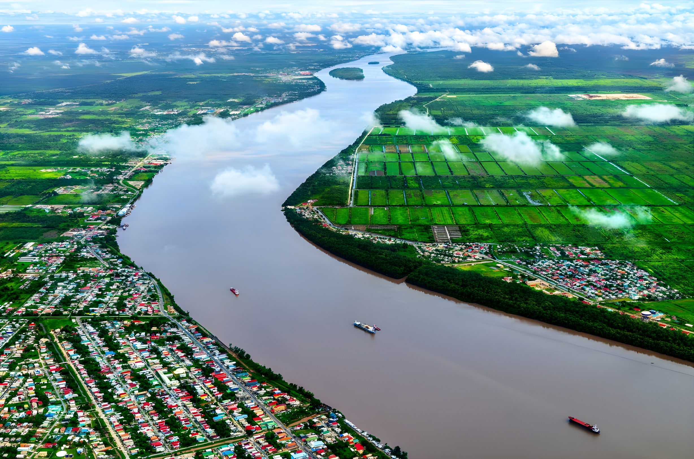

En avril 2026, le Guyana franchit un seuil historique : ses recettes pétrolières offshore couvrent l'intégralité de ses dépenses publiques, faisant de cette ancienne colonie britannique de moins d'un million d'habitants le premier État au monde à atteindre l'autosuffisance budgétaire par la rente pétrolière. Une décennie après la découverte du bassin de Stabroek par ExxonMobil, le pays incarne une transformation économique aussi spectaculaire que ses contradictions.
Avant la découverte du gisement Liza en 2015 par le consortium ExxonMobil-Hess-CNOOC dans le bloc offshore de Stabroek, le Guyana était l'un des pays les plus pauvres d'Amérique du Sud. Son économie reposait sur la canne à sucre, la bauxite et une diaspora importante. Le pays souffrait d'une émigration massive de ses forces vives, d'infrastructures défaillantes et d'un PIB par habitant inférieur à celui du Honduras.
La mise en production commerciale de Liza-1 en décembre 2019 marque une rupture nette. En six ans, la production est passée de zéro à plus de 750 000 barils par jour — un rythme d'essor pétrolier sans précédent dans l'histoire récente, comparable au bond des monarchies du Golfe dans les années 1970, mais concentré sur une décennie.
En avril 2026, le gouvernement du président Irfaan Ali annonce officiellement que les recettes pétrolières — reversées à l'État via la société nationale Guyana Oil Company (GOGC) — excèdent pour la première fois l'intégralité du budget national. Concrètement, cela signifie que l'État peut financer sans emprunt ni aide extérieure la totalité de ses dépenses : santé, éducation, infrastructures, fonction publique et service de la dette.
C'est une première mondiale à ce niveau de population et de ressources. Les Émirats arabes unis ou le Qatar ont bien atteint des ratios similaires, mais avec des économies diversifiées et des populations partiellement expatriées. Le Guyana, lui, est un État de droit démocratique, multiracial, avec une économie encore très peu diversifiée — ce qui rend ce franchissement aussi remarquable que fragile.
ExxonMobil annonce la découverte du gisement Liza dans le bloc Stabroek, à 190 km des côtes guyanaises. Les réserves estimées font du Guyana un acteur pétrolier majeur du continent.
Début de la production commerciale sur Liza-1. Le Guyana entre dans le club des producteurs pétroliers. Le PIB bondit de 43 % dès la première année pleine de production.
Mise en service de Liza-2 puis du projet Payara. La production dépasse 400 000 b/j. Le gouvernement crée le Fonds souverain Natural Resource Fund (NRF), avec obligation légale d'épargne.
Lancement du projet Yellowtail. Le Guyana dépasse la production de l'Équateur et du Gabon. Le taux de croissance du PIB reste le plus élevé au monde pour la troisième année consécutive.
Le président Ali annonce l'autosuffisance budgétaire complète : pour la première fois, les recettes pétrolières de l'État couvrent 100 % du budget national sans recours à l'endettement extérieur.
Le gouvernement Ali a engagé d'importants programmes d'investissement : autoroutes, nouveau pont sur le fleuve Demerara, hôpitaux régionaux, universités. Chaque ménage guyanais reçoit depuis 2023 un « chèque pétrolier » annuel de 100 000 dollars guyanais (environ 475 USD), sur le modèle de l'Alaska Permanent Fund. Ces transferts directs ont réduit la pauvreté monétaire de 28 % à 19 % en trois ans selon la Banque mondiale.
Mais la croissance explosive creuse aussi des inégalités nouvelles. L'inflation a dépassé 14 % en 2024. Georgetown, la capitale, connaît une pression immobilière inédite : les loyers ont triplé en cinq ans, chassant les classes moyennes des quartiers centraux. Les secteurs non pétroliers — agriculture, pêche, artisanat — peinent à survivre face à la hausse des salaires dans le secteur pétrolier, un phénomène classique de « maladie hollandaise ».
Le Guyana abrite 85 % de son territoire en forêt amazonienne. Le pays a signé avec la Norvège un accord de paiement pour services environnementaux (REDD+) et se targue d'être « carbone-négatif » grâce à ses forêts. Le président Ali le répète inlassablement sur les scènes internationales : le Guyana absorbe bien plus de CO₂ qu'il n'en émet.
Ce discours se heurte néanmoins à une contradiction croissante. Le pays prévoit de doubler sa production pétrolière d'ici 2030, avec plusieurs nouveaux blocs en exploration. Sur les côtes, les travaux du champ Hammerhead et du projet Whiptail avancent. ExxonMobil a obtenu en 2025 des autorisations pour cinq nouvelles unités flottantes FPSO. Aux COP successives, les délégués guyanais font valoir le droit au développement — un argument que les pays du Sud écoutent, même si les ONG environnementales le contestent vigoureusement.
| Indicateur | 2019 | 2026 |
|---|---|---|
| Production (b/j) | ~0 | > 750 000 |
| PIB/habitant (USD) | ~4 800 | ~22 000 |
| Fonds souverain (Md$) | 0 | ~7,2 |
| Taux de pauvreté | 28 % | 19 % |
| Inflation annuelle | 2,1 % | ~11 % |
Le cas guyanais alimente un débat dans les économies du développement. D'un côté, Georgetown démontre qu'une gestion institutionnelle rigoureuse — fonds souverain, règle budgétaire, transferts directs aux ménages — peut transformer une rente extractive en gains sociaux tangibles et mesurables. De l'autre, la dépendance à un seul secteur, à un seul contrat (le PSA de 1999) et à trois compagnies étrangères expose le pays à une fragilité structurelle majeure.
« Nous avons le droit de développer nos ressources pour sortir notre peuple de la pauvreté. Ne nous demandez pas de payer la facture d'un siècle d'industrialisation que nous n'avons pas commis. »
— Irfaan Ali, président du Guyana, COP29, Bakou, novembre 2024« Le Guyana est en train de construire une économie sur du sable — du sable pétrolier. Sans diversification, l'autosuffisance d'aujourd'hui est la vulnérabilité de demain. »
— Rapport de la Banque interaméricaine de développement, mars 2026L'autosuffisance budgétaire du Guyana est une réalité statistique et un symbole politique fort pour les pays du Sud en quête de souveraineté économique. Mais elle survient dans un monde où la transition énergétique s'accélère, où la demande en pétrole pourrait culminer dans les dix prochaines années, et où les ressources naturelles cessent rarement d'être une bénédiction sans conditions. Georgetown dispose d'une fenêtre historique pour diversifier son économie, consolider ses institutions et bâtir un capital humain durable. La manière dont le Guyana utilisera cet avantage temporaire — et s'il en aura la lucidité politique — déterminera si ce moment exceptionnel devient un héritage ou une opportunité manquée.